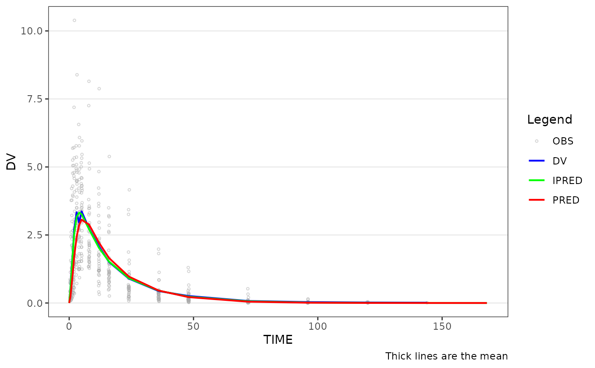

Creates a population overlay plot showing central tendency lines for
observed (DV), population predicted (PRED), and individual predicted (IPRED)
values. Colors and aesthetics for each variable are controlled through the
theme argument via plot_gof_theme(). Use the shown argument to
selectively hide variables.
Usage
plot_gof(
data,
dv_var = "DV",
pred_var = "PRED",
ipred_var = "IPRED",
time_var = "TIME",
ntime_var = "NTIME",
shown = NULL,
id_var = NULL,
dose_var = "DOSE",
loq = NULL,
loq_method = 0,
blq_mode = c("obs", "all"),
cent = c("mean", "mean_sdl", "mean_sdl_upper", "median", "median_iqr", "none"),
dosenorm = FALSE,
ref = NULL,
log_y = FALSE,
show_caption = TRUE,
theme = NULL
)Arguments
- data
Input dataset.
- dv_var
Column containing the dependent variable (DV). Accepts bare names or strings. Default is
DV.- pred_var
Column containing population predictions (PRED). Accepts bare names or strings. Default is
PRED.- ipred_var
Column containing individual predictions (IPRED). Accepts bare names or strings. Default is
IPRED.- time_var
Column containing the actual time variable. Accepts bare names or strings. Default is
TIME.- ntime_var
Column containing the nominal time variable. Accepts bare names or strings. Default is
NTIME.- shown
Layer visibility settings created by
plot_gof_shown(). Defaults can be viewed by runningplot_gof_shown()with no arguments.- id_var
Column to group observations for spaghetti lines. Accepts bare names or strings. Default is
NULL(no spaghetti lines).- dose_var
Column to use in dose-normalization when
dosenorm = TRUE. Accepts bare names or strings. Default isDOSE.- loq
Numeric value of the lower limit of quantification (LLOQ). BLQ imputation behavior on the DV / prediction layers is controlled by
blq_modeandloq_method. Default isNULL.- loq_method
Method for handling BLQ data. See
plot_dvtime()for option details. Default is0(no imputation).- blq_mode
One of
"obs"(default) or"all". Controls which layers receive BLQ imputation:"obs"imputes the observedDVlayer only, leavingPRED/IPREDuntouched (mirrorsplot_dvtime());"all"additionally imputes the prediction layers, useful when the GOF visual should mirror an estimation engine that censored predictions to LLOQ. Has no effect whenloq_method = 0.- cent
Character string specifying the central tendency measure. See
plot_dvtime()for option details. Default is"mean".- dosenorm
Logical indicating if observed data points should be dose normalized. Default is
FALSE. Requires variable specified indose_varto be present indata.- ref
Numeric y-intercept for a horizontal reference line, or
NULLfor no reference line.- log_y
Logical indicator for log10 transformation of the y-axis. Also controls whether the caption reports arithmetic or geometric mean when
show_caption = TRUE.- show_caption
Logical indicating if a caption should be shown describing the data plotted.
- theme
Theme object created by
plot_gof_theme(). Defaults can be viewed by runningplot_gof_theme()with no arguments. Default error bar width is 2.5% of maximumNTIME.
See also
Other goodness-of-fit:
plot_gof_shown(),
plot_gof_theme()
Examples
plot_gof(data_sad_pkfit, dv_var = ODV, dosenorm = TRUE)
#> Warning: Removed 169 rows containing non-finite outside the scale range
#> (`stat_summary()`).
#> Warning: Removed 169 rows containing non-finite outside the scale range
#> (`stat_summary()`).
#> Warning: Removed 169 rows containing missing values or values outside the scale range
#> (`geom_point()`).
